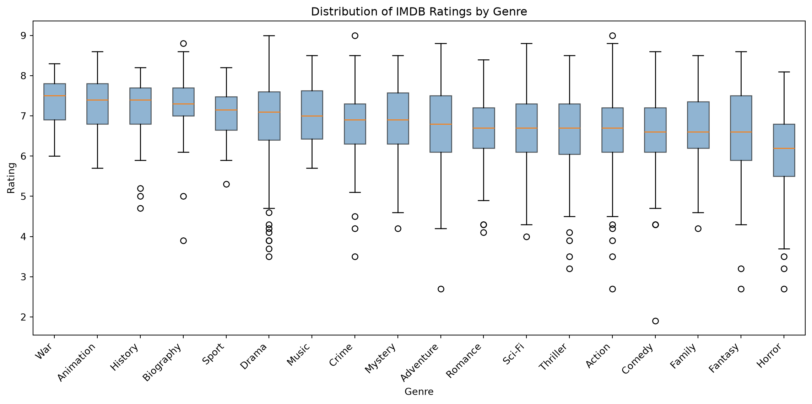
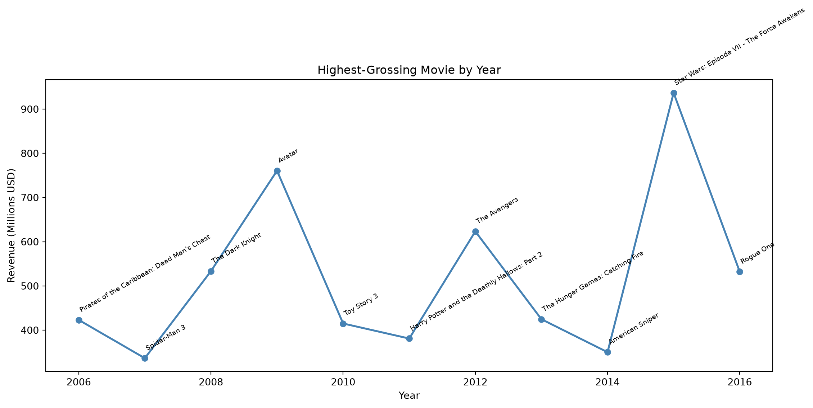

The following analysis comes from the IMDB dataset, which contains 1,000 movies from 2006–2016, along with information about their genre, rating, number of votes, revenue, and other attributes.
Do some genres tend to have higher IMDB ratings than others?
What was the highest-grossing movie in each year?
Nothing particularly groundbreaking here. This is mostly an exercise in getting comfortable with pandas, manipulating the data into a form that is useful for analysis, and making plots that are actually readable.
Data Reading
We can start by reading the data using the pandas library:
import pandas as pdimport matplotlib.pyplot as plturl ="https://raw.githubusercontent.com/prasertcbs/basic-dataset/refs/heads/master/IMDB_Movie_1000_Data.csv"local_path ="../../data/IMDB_Movie_Data.csv"try: df = pd.read_csv(url)exceptExceptionas e: df = pd.read_csv(local_path)df.head()
Rank
Title
Genre
Description
Director
Actors
Year
Runtime (Minutes)
Rating
Votes
Revenue (Millions)
Metascore
0
1
Guardians of the Galaxy
Action,Adventure,Sci-Fi
A group of intergalactic criminals are forced ...
James Gunn
Chris Pratt, Vin Diesel, Bradley Cooper, Zoe S...
2014
121
8.1
757074
333.13
76.0
1
2
Prometheus
Adventure,Mystery,Sci-Fi
Following clues to the origin of mankind, a te...
Ridley Scott
Noomi Rapace, Logan Marshall-Green, Michael Fa...
2012
124
7.0
485820
126.46
65.0
2
3
Split
Horror,Thriller
Three girls are kidnapped by a man with a diag...
M. Night Shyamalan
James McAvoy, Anya Taylor-Joy, Haley Lu Richar...
2016
117
7.3
157606
138.12
62.0
3
4
Sing
Animation,Comedy,Family
In a city of humanoid animals, a hustling thea...
Christophe Lourdelet
Matthew McConaughey,Reese Witherspoon, Seth Ma...
2016
108
7.2
60545
270.32
59.0
4
5
Suicide Squad
Action,Adventure,Fantasy
A secret government agency recruits some of th...
David Ayer
Will Smith, Jared Leto, Margot Robbie, Viola D...
2016
123
6.2
393727
325.02
40.0
The dataset is already fairly analysis-friendly, but there is one slightly inconvenient column: Genre.
A movie can belong to multiple genres, so instead of having one genre per row, the dataset stores them together as a comma-separated string.
For example, a movie might be classified as:
Action, Adventure, Sci-Fi
That is fine for displaying the data, but not ideal if we want to compare ratings across genres. So the first thing we need to do is split those values apart.
Rating Distribution across Genres
Among the movies associated with each genre, how are their IMDB ratings distributed?
df['Genre'] = df['Genre'].str.split(',')df_exploded = df.explode('Genre')df_exploded['Genre'] = df_exploded['Genre'].str.strip()genre_counts = df_exploded['Genre'].value_counts()common_genres = genre_counts[genre_counts >=10].indexdf_common = df_exploded[df_exploded['Genre'].isin(common_genres)]order = ( df_common.groupby('Genre')['Rating'] .median() .sort_values(ascending=False) .index)plt.figure(figsize=(12, 6))data_by_genre = [df_common[df_common['Genre'] == g]['Rating'].values for g in order]plt.boxplot(data_by_genre, tick_labels=list(order), patch_artist=True, boxprops=dict(facecolor='steelblue', alpha=0.6))plt.title('Distribution of IMDB Ratings by Genre')plt.xlabel('Genre')plt.ylabel('Rating')plt.xticks(rotation=45, ha='right')plt.tight_layout()plt.show()

There are a couple of things happening here that are worth pointing out.
First, I’m using a boxplot instead of simply calculating the average rating. An average would give us one number for each genre, but it wouldn’t tell us much about how those ratings are distributed.
The boxplot gives us a better idea of the median, the middle 50% of ratings, and the spread of the data. It also makes it easier to spot genres where a few movies have ratings that are quite different from the rest.
I also filtered out genres that appear fewer than 10 times in the dataset. There isn’t much value in comparing a genre represented by only a handful of movies against one represented by hundreds of movies. The cutoff of 10 is somewhat arbitrary, but it keeps the visualization focused on genres with at least a reasonable number of observations.
The plot also makes the variation within genres more interesting than simply comparing their medians. Some genres have a relatively tight distribution of ratings, while others have movies spread across a much wider range.
So, rather than trying to declare a single “best” genre from this plot, I’d treat it as a way of seeing how different genres are represented in this particular IMDB dataset.
Top Grossing Movies across each Year
For each year, which movie had the highest reported revenue?
There is one complication here: some movies don’t have a value recorded for Revenue (Millions). Since we can’t identify the highest-grossing movie from a missing value, those rows need to be excluded from this particular analysis.
df_rev = df.dropna(subset=['Revenue (Millions)'])idx = df_rev.groupby('Year')['Revenue (Millions)'].idxmax()top_per_year = df_rev.loc[idx].sort_values('Year')plt.figure(figsize=(12, 6))plt.plot(top_per_year['Year'], top_per_year['Revenue (Millions)'], marker='o', color='steelblue', linewidth=2)# Annotate each point with the movie titlefor _, row in top_per_year.iterrows(): plt.annotate(row['Title'], (row['Year'], row['Revenue (Millions)']), textcoords="offset points", xytext=(0, 8), fontsize=7, rotation=30, ha='left')plt.title('Highest-Grossing Movie by Year')plt.xlabel('Year')plt.ylabel('Revenue (Millions USD)')plt.tight_layout()plt.show()

I like this visualization a little more than a simple table because the year-to-year changes become much easier to see.
There are some fairly dramatic jumps in the revenue of the highest-grossing movie from one year to another. A single blockbuster can pull the top of the chart considerably higher, so the line isn’t really showing a smooth trend in the movie industry. It’s showing how the biggest hit in the dataset changed from year to year.
The movie titles are also useful here. Without them, we’d just have a line moving up and down with no idea what caused each point.
One thing that stands out is how much the biggest movies can dominate the numbers. A year with one enormous franchise release can look very different from a year where the highest-grossing movie had a much smaller box office.
A few things I took away
This was a relatively simple analysis, but there were a few useful pandas lessons hiding inside it.
The first was explode(). Whenever a column contains multiple values packed into a single cell, it can be useful to turn those values into separate rows before doing any grouping or aggregation.
The second was the importance of looking at the distribution, rather than immediately reducing everything to an average. The genre analysis is much more informative as a boxplot because we can see variation between movies, not just one summary statistic.
And finally, there is the slightly less exciting but probably more important part of data analysis: being careful about what the data actually represents.
It’s easy to look at a chart and come away with a strong conclusion. But in this case, we’re working with a curated dataset, movies can belong to multiple genres, and some revenue values are missing. Those details don’t make the analysis useless; they just determine what conclusions we can reasonably draw from it.
Which is probably a good reminder that the hardest part of data analysis isn’t always writing the code.
Sometimes it’s deciding what the code is actually telling you.